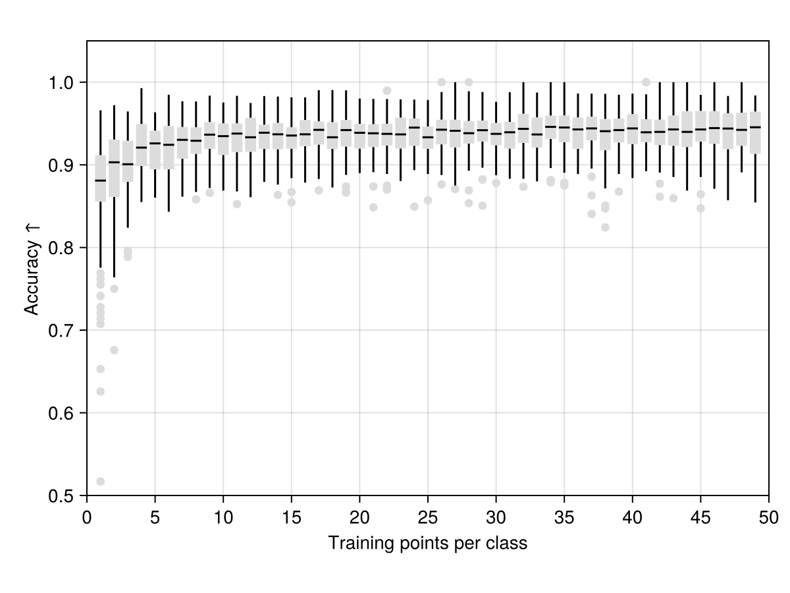

Predictive modelling with HDC: Iris dataset
This example shows an end-to-end, classical machine-learning workflow built entirely out of hyperdimensional computing (HDC) primitives: we encode the numeric Iris dataset into hypervectors, decode them back to check the encoding is faithful, and then train and evaluate a tiny nearest-prototype classifier. Along the way we highlight the specific HyperdimensionalComputing.jl functions that do the heavy lifting.
If you have not seen the core operations (mapping, bundling, binding) yet, the "Introduction to HDC" tutorial is a gentler starting point.
using HyperdimensionalComputing
using MLDatasets, DataFrames
using Statistics
using AlgebraOfGraphics, CairoMakieThe dataset ships with MLDatasets. We ask for the raw arrays (as_df = false) rather than a DataFrame: X is a 4 × 150 matrix of measurements (sepal length/width, petal length/width, in centimetres) and y holds the species label of each of the 150 flowers.
X, y = Iris(as_df = false)[:](features = [5.1 4.9 … 6.2 5.9; 3.5 3.0 … 3.4 3.0; 1.4 1.4 … 5.4 5.1; 0.2 0.2 … 2.3 1.8], targets = InlineStrings.String15["Iris-setosa" "Iris-setosa" … "Iris-virginica" "Iris-virginica"])Encoding
The first thing we need to do in order to work with HDC is to encode our problem into hyperdimensional space. For that, we need an encoder that converts our objects in real space (denoted $\mathbb{R}$) into hypervectors representing the hyperdimensional space (denoted $\mathbb{H}$).
In this classical example we build a key–value (hash-table) encoder: each flower is a record whose keys are the four feature names and whose values are the measured numbers. We bind each value to its key and bundle the four pairs into a single hypervector – exactly what the hashtable encoder does.
First, we map each feature name to a random hypervector that will act as its key:
SEPALLENGTH = BinaryHV()
SEPALWIDTH = BinaryHV()
PETALLENGTH = BinaryHV()
PETALWIDTH = BinaryHV()
H_features = [SEPALLENGTH, SEPALWIDTH, PETALLENGTH, PETALWIDTH]4-element Vector{BinaryHV}:
10000-element BinaryHV with 5017 true and 4983 false
10000-element BinaryHV with 5061 true and 4939 false
10000-element BinaryHV with 5080 true and 4920 false
10000-element BinaryHV with 4973 true and 5027 falseThe values are continuous numbers, so a purely random mapping would throw away their ordering (5.0 cm and 5.1 cm would be as unrelated as 5.0 cm and 100 cm). Instead we use a level encoder: LevelEncoder builds a ladder of hypervectors in which neighbouring levels are similar and far-apart levels are dissimilar, so numeric closeness becomes hypervector similarity. We lay out one level every 0.1 cm across the observed range:
cm = range(extrema(X)...; step = 0.1)0.1:0.1:7.9lvl = LevelEncoder(BinaryHV, cm)LevelEncoder{BinaryHV}: 79 levels over [0.1, 7.9] (ladder, bandwidth = 0.02531645569620253)The encoder is the ladder: it holds the level hypervectors it built at construction, so every value encoded through it lands on the same scale. encode maps a number to its closest level:
encode(lvl, 5.1)10000-element BinaryHV with 5084 true and 4916 false:
0
1
0
1
0
1
0
1
0
1
⋮
0
1
1
0
1
0
1
1
0We can now encode a single flower: bind each feature value to its key and bundle the pairs with hashtable.
encodeflower(features) = hashtable([encode(lvl, x) for x in features], H_features)encodeflower (generic function with 1 method)hashtable is only one of the built-in combinators. The package ships several more (multiset, bundlesequence, ngrams, graph, ...) for prototyping or training small models. For the full catalogue, see the API reference.
Applying it to every column encodes the whole dataset – 150 flowers, each now a single hypervector:
H_allflowers = map(encodeflower, eachcol(X))150-element Vector{BinaryHV}:
10000-element BinaryHV with 5018 true and 4982 false
10000-element BinaryHV with 5023 true and 4977 false
10000-element BinaryHV with 5022 true and 4978 false
10000-element BinaryHV with 5024 true and 4976 false
10000-element BinaryHV with 5019 true and 4981 false
10000-element BinaryHV with 4980 true and 5020 false
10000-element BinaryHV with 5031 true and 4969 false
10000-element BinaryHV with 4989 true and 5011 false
10000-element BinaryHV with 4990 true and 5010 false
⋮
10000-element BinaryHV with 4955 true and 5045 false
10000-element BinaryHV with 5031 true and 4969 false
10000-element BinaryHV with 4994 true and 5006 false
10000-element BinaryHV with 4978 true and 5022 false
10000-element BinaryHV with 4949 true and 5051 false
10000-element BinaryHV with 4976 true and 5024 false
10000-element BinaryHV with 4999 true and 5001 false
10000-element BinaryHV with 4995 true and 5005 false
10000-element BinaryHV with 4999 true and 5001 falseDecoding
Once we have our hypervectors, we can use the same operations to decode them back into the original space. Here we exploit the fact that binding is its own inverse: unbinding a flower with a feature key recovers (an approximation of) the value hypervector for that feature.
Let's pick a random flower from the dataset:
H_flower = H_allflowers[rand(1:size(X, 2))]10000-element BinaryHV with 5028 true and 4972 false:
0
1
1
0
0
1
1
0
0
1
⋮
0
1
1
1
0
1
1
0
1Unbinding it with a key yields the (noisy) level hypervector for that feature – for example, its sepal length:
H_flower * SEPALLENGTH10000-element BinaryHV with 5113 true and 4887 false:
0
1
0
1
0
1
1
0
0
1
⋮
1
1
0
0
1
0
1
1
1That hypervector is not exactly any level, but it is closest to the right one. The counterpart of encode is decode, which snaps a hypervector back to the numeric level it most resembles. The two are only consistent against the same encoder – which is exactly why the ladder lives inside the lvl object rather than in a pair of loose functions:
decode(lvl, H_flower * SEPALLENGTH)6.4Putting it together, a decoder for a whole flower unbinds every feature and reads off its value:
decodeflower(hv) = [decode(lvl, hv * key) for key in H_features]
decodeflower(H_flower)4-element Vector{Float64}:
6.4
3.2
4.5
1.5Compare that with the flower's true measurements – the round-trip through $\mathbb{H}$ recovers them up to the 0.1 cm resolution of our level ladder:
X[:, rand(1:size(X, 2))] # a real measurement vector, for reference on scale4-element Vector{Float64}:
4.9
3.1
1.5
0.1LevelEncoder offers several constructor forms: LevelEncoder(HV, values) (one level per value, as used here), LevelEncoder(HV, range, n) for n levels spanning a range, and LevelEncoder(FHRR, values; β), which uses fractional power encoding to represent a continuous range instead of a discrete ladder.
Training a small model
We can now build a classifier. The idea is beautifully simple: a class is represented by the bundle (superposition) of all its training examples, giving a single prototype hypervector that sits close to every flower of that species. bundle is the bundling operation from the introduction.
H_setosa = bundle(H_allflowers[vec(y) .== "Iris-setosa"])
H_versicolor = bundle(H_allflowers[vec(y) .== "Iris-versicolor"])
H_virginica = bundle(H_allflowers[vec(y) .== "Iris-virginica"])10000-element BinaryHV with 5000 true and 5000 false:
1
1
1
0
0
1
1
0
0
1
⋮
1
1
1
0
0
1
1
0
1As a sanity check, let's decode each prototype and compare it against the mean measurements of its class. The prototypes are not just abstract vectors – decoding them recovers something very close to the class averages:
[decodeflower(H_setosa)'; mean(X[:, vec(y) .== "Iris-setosa"], dims = 2)']2×4 Matrix{Float64}:
5.0 3.5 1.4 0.2
5.006 3.418 1.464 0.244[decodeflower(H_versicolor)'; mean(X[:, vec(y) .== "Iris-versicolor"], dims = 2)']2×4 Matrix{Float64}:
6.0 2.9 4.2 1.4
5.936 2.77 4.26 1.326[decodeflower(H_virginica)'; mean(X[:, vec(y) .== "Iris-virginica"], dims = 2)']2×4 Matrix{Float64}:
6.6 3.0 5.5 2.1
6.588 2.974 5.552 2.026Pretty close! Let's evaluate the model properly. First, we split the data into a training and a test set:
split = 0.8
test = rand(length(y)) .> split
train = .! test150-element BitVector:
0
1
1
1
1
1
1
1
1
1
⋮
1
1
0
1
1
1
1
1
0We regenerate the prototype hypervectors exactly as before, but using only the training flowers:
H_setosa = bundle(H_allflowers[(vec(y) .== "Iris-setosa") .&& train])
H_versicolor = bundle(H_allflowers[(vec(y) .== "Iris-versicolor") .&& train])
H_virginica = bundle(H_allflowers[(vec(y) .== "Iris-virginica") .&& train])
H_prototypes = [H_setosa, H_versicolor, H_virginica]3-element Vector{BinaryHV}:
10000-element BinaryHV with 4980 true and 5020 false
10000-element BinaryHV with 4988 true and 5012 false
10000-element BinaryHV with 4995 true and 5005 falseTo classify a flower we simply find the most similar prototype with nearest_neighbor, which returns a (similarity, index, hypervector) tuple – the index tells us which class won:
id2class = unique(y)
correct = map(findall(test)) do i
H_test = H_allflowers[i]
ytrue = y[i]
ypred = nearest_neighbor(H_test, H_prototypes)
ytrue == id2class[ypred[2]]
end |> sum
accuracy = correct / sum(test)0.9333333333333333Great – we trained a classifier out of nothing but bundling and similarity, and it is already very accurate!
Data diet in HDC
One of the interesting properties of HDC is that we can train usable models from very little data – sometimes even a single example per class. Let's probe this by repeating the experiment across training sizes ranging from 1 point per class (~2% of the data) up to 49 points per class (~98%).
We define a helper that draws n training flowers per class, builds the prototypes, and returns the test accuracy. Note the in-body comments are written with ## so Literate.jl keeps them inside the code block:
function traintest(n)
# Draw n training flowers per class and use the rest as test set
train = zeros(Bool, 150)
train[[rand(1:50, n); rand(51:100, n); rand(101:150, n)]] .= true
test = .! train
# Construct one prototype per class from the training flowers
H_setosa = bundle(H_allflowers[(vec(y) .== "Iris-setosa") .&& train])
H_versicolor = bundle(H_allflowers[(vec(y) .== "Iris-versicolor") .&& train])
H_virginica = bundle(H_allflowers[(vec(y) .== "Iris-virginica") .&& train])
H_prototypes = [H_setosa, H_versicolor, H_virginica]
# Predict every test flower and return the accuracy
id2class = unique(y)
correct = map(findall(test)) do i
H_flower = H_allflowers[i]
ytrue = y[i]
ypred = nearest_neighbor(H_flower, H_prototypes)
ytrue == id2class[ypred[2]]
end |> sum
return correct / sum(test)
endtraintest (generic function with 1 method)Now we run this train/test workflow over the range of training sizes, repeating each 100 times to get a performance distribution:
results = Dict("points" => Int[], "accuracy" => Float64[])
for points in 1:49
for _ in 1:100
push!(results["points"], points)
push!(results["accuracy"], traintest(points))
end
end
draw(
data(results)
* mapping(:points => "Training points per class", :accuracy => "Accuracy ↑")
* visual(BoxPlot, color = :gainsboro, width = 1)
, axis = (; aspect = 1.5, limits = (0, 50, 0.5, 1.05), xticks = 0:5:50, yticks = 0.5:0.1:1.0)
)
As the plot shows, HDC is capable of few-shot learning: even a handful of examples per class gets us close to the accuracy reached with the full training set.
A second encoding: random projection
The key–value encoder above is interpretable: each flower hypervector is built from named parts, which is why we could decode it feature by feature. But it is not the only way to get numeric data into hyperspace, and it is not the shortest.
RandomProjection takes the whole feature vector at once, multiplying it by a fixed random matrix and applying a nonlinearity. Distances are approximately preserved, so flowers with similar measurements get similar hypervectors – without us naming a single feature.
rp = RandomProjection(BipolarHV, 4; seed = 42)
H_projected = [encode(rp, X[:, i]) for i in 1:size(X, 2)]150-element Vector{BipolarHV}:
10000-element BipolarHV with 4921 positives and 5079 negatives
10000-element BipolarHV with 4912 positives and 5088 negatives
10000-element BipolarHV with 4918 positives and 5082 negatives
10000-element BipolarHV with 4918 positives and 5082 negatives
10000-element BipolarHV with 4913 positives and 5087 negatives
10000-element BipolarHV with 4920 positives and 5080 negatives
10000-element BipolarHV with 4924 positives and 5076 negatives
10000-element BipolarHV with 4910 positives and 5090 negatives
10000-element BipolarHV with 4915 positives and 5085 negatives
⋮
10000-element BipolarHV with 4958 positives and 5042 negatives
10000-element BipolarHV with 4950 positives and 5050 negatives
10000-element BipolarHV with 4956 positives and 5044 negatives
10000-element BipolarHV with 4956 positives and 5044 negatives
10000-element BipolarHV with 4960 positives and 5040 negatives
10000-element BipolarHV with 4956 positives and 5044 negatives
10000-element BipolarHV with 4957 positives and 5043 negatives
10000-element BipolarHV with 4962 positives and 5038 negatives
10000-element BipolarHV with 4942 positives and 5058 negativesOne line, no keys, no level ladder. We can drop it into exactly the same nearest-prototype workflow:
function traintest_projection(; split = 0.8)
test = rand(length(y)) .> split
train = .!test
classes = unique(y)
prototypes = [bundle(H_projected[(vec(y) .== c) .&& train]) for c in classes]
correct = sum(
classes[nearest_neighbor(H_projected[i], prototypes)[2]] == y[i]
for i in findall(test)
)
return correct / sum(test)
end
mean(traintest_projection() for _ in 1:30)0.9638545226061169Comparable to the key–value encoder, from an encoder that needed no domain knowledge at all. The trade-off is exactly the one you would expect: the key–value representation can be taken apart again (we decoded petal lengths out of it), whereas a random projection is lossy by construction – decode for it is nearest-neighbour clean-up against a codebook, never inversion.
Common advice is to standardise features before projecting, and with good reason: a projection is dominated by whichever feature has the largest spread, so features on wildly different scales (say, grams and kilometres) need to be put on a common footing.
Iris is a case where the advice backfires, and it is worth seeing why. All four measurements are already in centimetres, and the most discriminative ones – petal length and width – are precisely the ones with the largest spread. Standardising throws that natural weighting away and gives the noisy sepal width an equal vote. Averaged over 30 random splits we measured 0.98 ± 0.03 on the raw features against 0.83 ± 0.06 on standardised ones, with the raw features winning 29 splits out of 30.
So: standardise when your features are incommensurable, not as a reflex. When they share a unit and their spread carries signal, leave them alone.
This page was generated using Literate.jl.